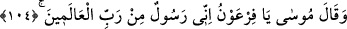
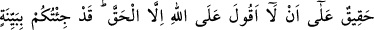
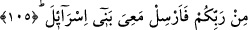
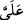
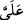

Muhît isimli eserin müellifi demiştir ki: Saçı siyaha boyamanın haramlığı, savaşa
gidenlerin haricindekiler içindir. Gazaya giden kimsenin süslenmek için değil de sırf
düşmanın gözüne daha heybetli gözükmek için saçlarını siyaha boyaması haram
değildir.
104. Musa dedi ki: “Ey Firavun! Ben âlemlerin Rabbi tarafından gönderilmiş bir
peygamberim.
“Mûsâ” (a.s.) kendisi ile beraber Allah Teâlâ’nın peygamberlikle görevlendirdiği
kardeşi Harûn (a.s.) ile birlikte Firavun’un yanına girince “dedi ki: Ey Firavun, ben
âlemlerin Rabbi’nden sana gönderilmiş bir peygamberim.” Seni âlemlerin Rabbi’ne
kulluğa çağırıyor ve rablik iddiasından men ediyorum.” dedi.
105. Allah hakkında gerçekten başkasını söylememek benim üzerime borçtur.
Size Rabbinizden açık bir delil getirdim; artık İsrailoğullarını benimle bırak!”
Firavun ona: “Yalan söylüyorsun. Sen peygamber değilsin” deyince Mûsâ (a.s.):
“Allah’a karşı, gerçekten başkasını söylememek benim üzerime borçtur.” Yani, banâ
layık olan budur.
el-Medârik’de şöyle denilmektedir: “Yani, şüphesiz ben gerçek ve risalete layık bir
peygamberim. Allah’a karşı, gerçekten başkasını söylememek üzere gönderildim.”
Nâfi‘, “ ” harfini, “” şeklinde okumuştur.
” harfini, “” şeklinde okumuştur.
Mûsâ (a.s.), kendisinin âlemlerin Rabbi tarafından gönderilmiş bir peygamber
olduğunu iddia ettikten sonra bu iddiasının doğru olduğuna delil olacak şeyleri
zikretmek üzere şöyle demiştir: “Size Rabb’inizden açık delil” yani, asâ ve beyaz el
gibi apaçık mucizeler “getirdim. Artık İsrailoğulları’nı benimle gönder.” Onları bırak
da benimle beraber atalarının diyarı olan mukaddes topraklara gitsinler.
Firavun, İsrailoğulları’nı köle yapmıştı. Bunun sebebi şu idi: Ya’kub (a.s.) çoluk
çocuğuyla Mısır’a gelince orada yerleşti. Nesilleri çoğaldı. Yakup, Yusuf ve kardeşleri
öldüler. Yusuf’un zamanında firavun olan Melik Reyyân da öldü. Oğlu Mus’ab
İsrailoğullarına saygı gösteriyor, onları rahatsız etmiyordu. O da ölünce Musa
zamanının firavunu olan Velîd saltanat tahtına oturdu. “Ben sizin en büyük rabbinizim”
demeye başladı. İsrailoğulları onun bu iddiasını kabul etmediler. Dedi ki: “Sizin